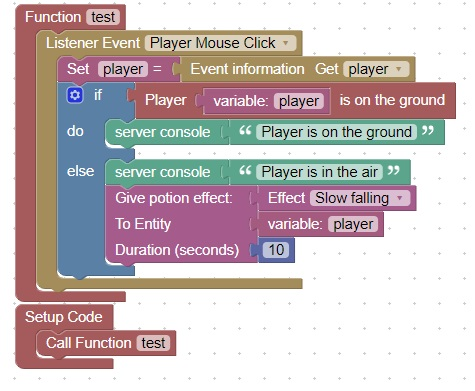

Give Player slow falling
When you put a player in the air, it is nice to also give them slow falling so they do not die.
This code will give a player slow falling if they are in the air and click the mouse

To test this code, go into creative mode (/gamemode creative)
and go in the air by pressing the space bar twice quickly, and then once to float
then click the mouse and check the server console. You should see a message indicating that you are in the air, and slow falling has been applied
Next go to the ground by pressing the space bar twice, and click the mouse
You should see a message in the server console indicating that you are on the ground